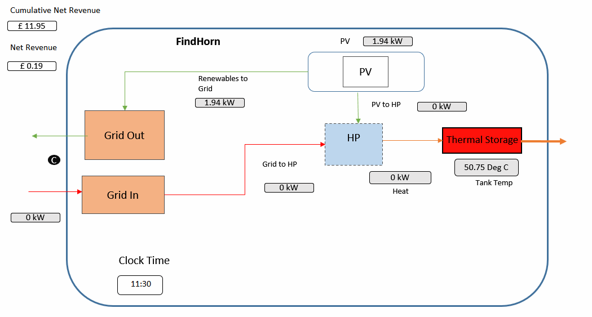
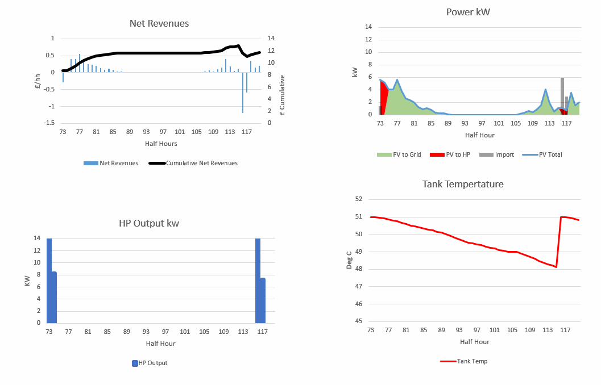
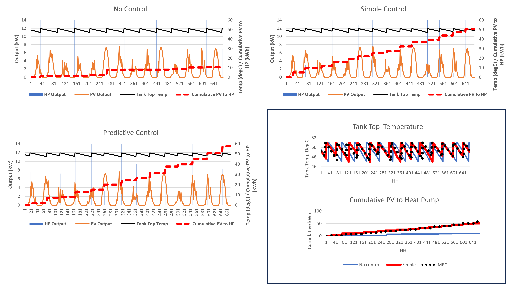

Use Case 6: FindHorn Solar PV & HeatPump
Case Overview
The Findhorn Ecovillage (in Moray, Scotland, near the village of Findhorn) is a synthesis of some of the very best of current thinking on sustainable human settlements.
It is a constantly evolving model used as learning environment by a number of university and school groups as well as by professional organisations and municipalities worldwide.
Numerous homes and community buildings incorporate solar panels for hot water heating and supply of electricity to Heat pumps. A community company supplies panels to residential and commercial customers throughout the UK, both for new buildings and to retrofit existing buildings. Most new community buildings incorporate design features that invite passive solar radiation to reduce building heating needs, such as south-facing windows and conservatories and minimal wall openings on north walls. Sustainably harvested wood provides space heating for both new and older homes.
Four community-owned wind turbines, which have a total capacity of 750kW, supply more than 100% of the community's electricity needs. The system is unusual in that the community owns its own
private electricity grid.The electricity produced by the turbines is sent to a substation that meters the flows, alters the transmission voltages and acts as a switching station.
Normally output is used on-site, but If production exceeds demand the surplus is exported to the grid and generates reveues.
If there is no wind output the site imports from the grid. Overall Findhorn are net exporters of electricity.
In this case study only the use of PV solar with a heat pump and thermal store is shown. PV output is used to heat the tank. Excess PV is exported, with imports used to heat the tank where necessary.
Real data (based on July 3-16 2023 ) is shown for the PV output, the HP output, tank top node temperature. In addition cumulative PV contribution to HP use is shown.
Assets
- 8 kW Solar PV
- Various Control schemesl
- Heat Load
- Heat Pump 14 kW heat output COP ~2
Market
Usecase 2 assumes that the wind turbine sells to it power on fixed contract (for both imports and exports of power).
Control and Data Capture
3 control cases are shown in Figure 3.
- MPC control essentially uses a regression model with weather forecasts to predict PV output for 24 hours, and a regression model for tank temperatures and predicted demand to assess when 47C will be reached. The tank will charge and store when the next timestep has the highest predicted PV output before the timestep when 47C is predicted and the temperature is below 50C.
- No control - automatically recharges at a top tank temperature of 47C.
- Simple control recharges if temp is below 50C and PV above 5kW, or 47C if that comes first. The 5kW has worked over summer but that would be more flexible over winter based on some logic.
Animation
The video below conceptualises the current setup in block form and shows a simulation/animation of the assets described above. Arrow sizes represent flows associated with use case.


Notes
- Net Revenues = Export to grid - Import from Grid Revenues. Not used in Control Scheme
- Simulation over two weeks; Half Hour by Half Hour. Sim start from HH - 96
- Graphs show rolling window. Note the right hand side of the graph shows the latest output. Those to the left of that point represent the historical points
- Note zero flow lines still shown
Other Cases
The animation above uses MPC control (lookahead using weather forecats) to the use of PV output to the heatpump Two other control cases are shown for comparison (see Figure 3).
- No control -
- Simple Control
- MPC Control
